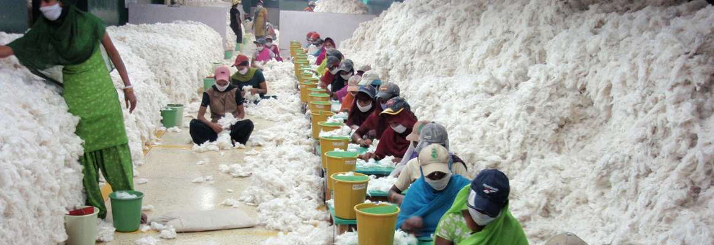

Have you ever wondered about the journey of your clothes, from raw materials to the finished product hanging in your closet? The textile production process has a significant environmental impact, affecting air and water quality, as well as contributing to resource depletion.
The Environmental Impact
Textile production involves various stages, each with its own set of environmental challenges. From growing cotton to dyeing fabrics and finishing garments, here are some key aspects of the environmental impact:
1. Cotton Farming
The cultivation of conventional cotton often involves the use of pesticides and chemical fertilizers. These substances can have detrimental effects on soil health, water quality, and the well-being of farmworkers.
2. Water Pollution
Textile dyeing is a major contributor to water pollution. The leftover water from the dyeing process often contains harmful chemicals and is discharged into water bodies, impacting aquatic ecosystems and communities downstream.

3. Synthetic Fibers
The use of synthetic fibers like polyester, nylon, and acrylic has become prevalent in the fashion industry. However, these materials are derived from petrochemicals and can take hundreds of years to biodegrade, contributing to plastic pollution.
4. Resource Depletion
The production of textiles requires significant amounts of water, energy, and raw materials. Fast fashion's demand for quick and cheap production exacerbates resource depletion, putting a strain on the environment.
As consumers, understanding the environmental impact of textile production empowers us to make more sustainable choices. By supporting eco-friendly practices and responsible brands, we can contribute to a healthier planet.
Read More Articles